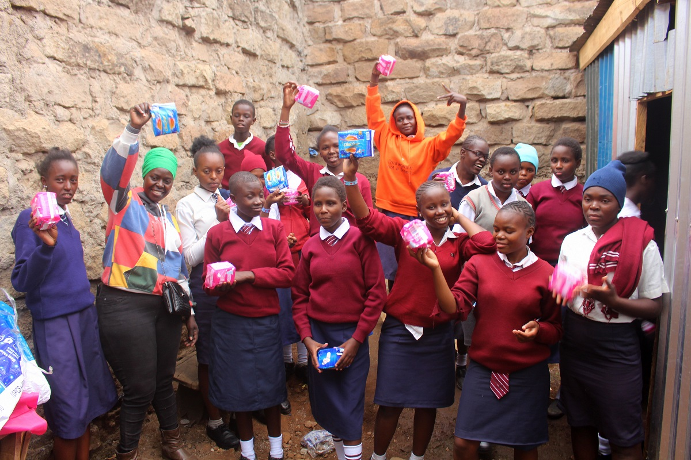
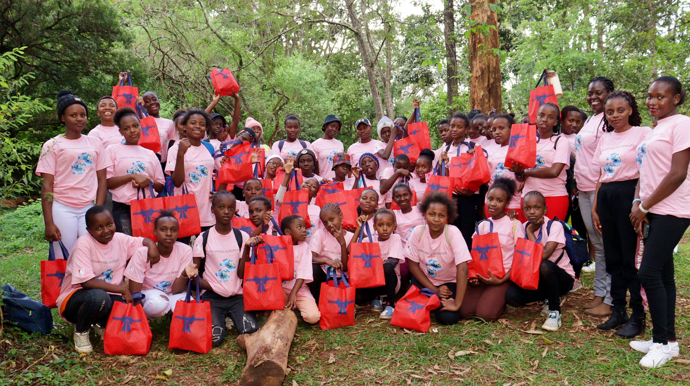

The aim of the mentorship is nurturing a community of bold female leaders , with the voice of change both at an individual and societal level.
The mentorship department works closely with adolescent girls of ages 9 to 19 years in 3 community high schools and out of school . The mentors in the department facilitate sessions on sexual reproductive health and rights including information access, adolescence and peer pressure, mental health and well being, menstrual hygiene, healthy communication and leadership skills . Boys are also engaged in the sessions in the schools we partner with as allies in ending period stigma.

The mentorship sessions run on a monthly basis, with six sessions every month. We mark and celebrate the girls on occasions that call for it like International day of the girl child and Menstrual hygiene day marked globally.

To support our sanitary towels provision to end period poverty, please donate here